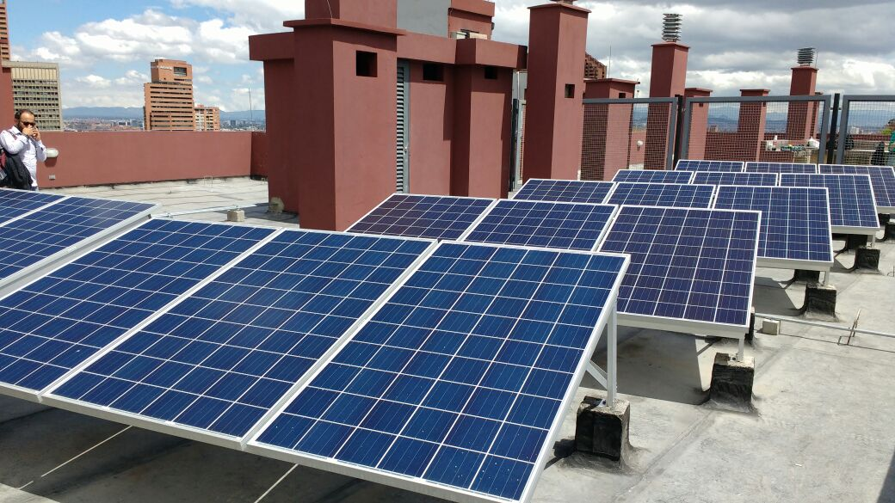
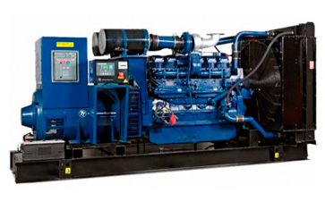

Las placas solares, también conocidas como paneles solares o paneles fotovoltaicos son unos dispositivos tecnológicos que se utilizan para convertir la energía del sol, que está formada por fotones, en energía eléctrica.
- Es renovable.
- Es una fuente de energía ilimitada.
- Es la fuente de energía más limpia y no pone en peligro ni incrementa el calentamiento global, debido a que no produce gases de efecto invernadero ni subproductos peligrosos para el medio ambiente.
- Tiene un bajo costo de aprovechamiento, tras la inversión inicial en la fabricación de los componentes y la instalación, que es la que puede resultar más costosa.
- Se puede producir energía limpia que resulta más económica que la que se adquiere por medio de la red.
- Está disponible en todo el planeta, por lo que se convierte en la mejor forma de proveer electricidad a lugares aislados, donde el costo de instalar líneas de distribución de electricidad es demasiado alto.
- La tecnología permite convertir la energía solar en electricidad por medio de dispositivos fotovoltaicos y de energía solar térmica.
- Contribuye al desarrollo sostenible.
- Genera empleo en las zonas donde se instala.
- Reduce el uso de combustibles fósiles.
- Reduce las importaciones energéticas.
En caso tal, el conjunto posee una planta electrica de respaldo, es una máquina que mueve un generador de electricidad a través de un motor de combustión interna. Es comúnmente utilizada cuando hay déficit en la generación de energía eléctrica, o en caso de cortes en el suministro eléctrico y garantiza la continuidad del trabajo en de las operaciones de producción.
Volver al inicio